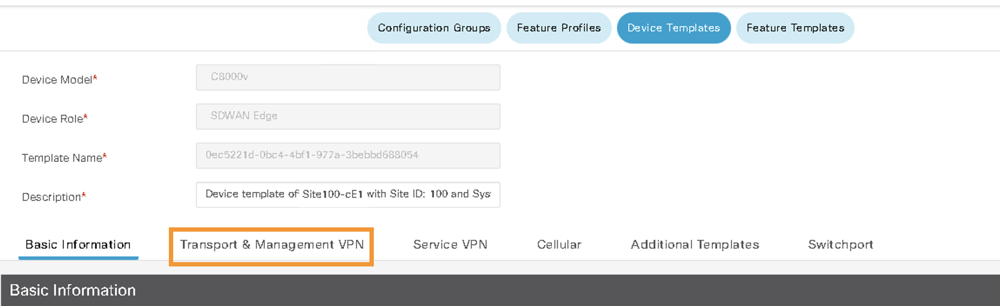
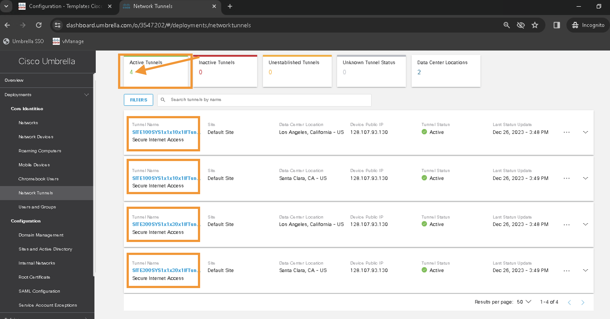
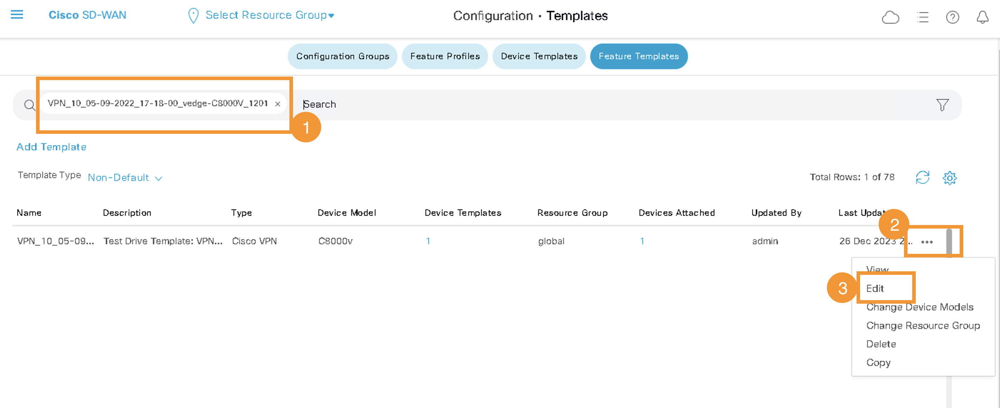
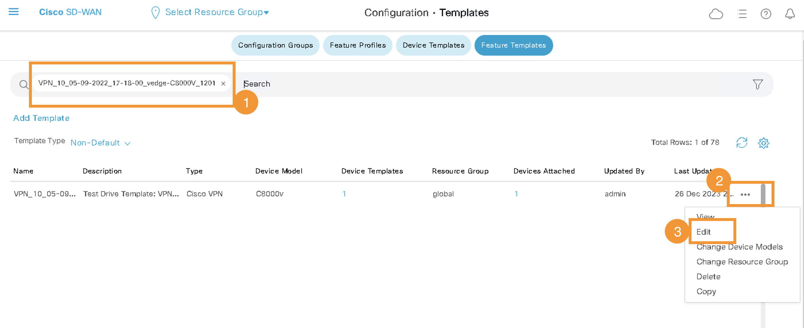

Task 7 - Umbrella SIG policies for Regional Access
Step 1 - Apply SIG Template
- Add the SIG template in VPN0 on the device template of node Site100-cE1 in the Transport and Management VPN section.
- Click Device template

- Edit Site100-cE1 template

- Click on Transport and Management VPN 
- Click on Cisco Secure Internet Gateway and add the template.

- Scroll all the way down to Additional Template and ensure Cisco SIG Credentials are added.

- Click Update
- Click Next

- Click Configure Device

- Wait till config push is sucessfull
- Click Device template
Step 4 - SIG Tunnels Verificaiton
- Confirm that the tunnels to Umbrella are UP by accessing Umbrella dashboard Deployments>Network Tunnels. Initially it will be shown in Unestablished Tunnels but after few minutes Active Tunnels will become 4


Step 5 - Redirect Traffic to SIG tunnels
- Add a Service Route to SIG in order to redirect traffic from VPN 10 to Umbrella.
- On vManage, navigate to Configuration>Templates >Feature, and then search for VPN_10_05-09-2022_17-18-00_vedge-C8000V_1201 and edit the template

 
 - Click Service Route

- Click New Service Route
- Add a route to
0.0.0.0/0pointing to SIG. - Click Add and then Update

- click Next and then click Configure Device
- Wait till config push is sucessfull
- On vManage, navigate to Configuration>Templates >Feature, and then search for VPN_10_05-09-2022_17-18-00_vedge-C8000V_1201 and edit the template